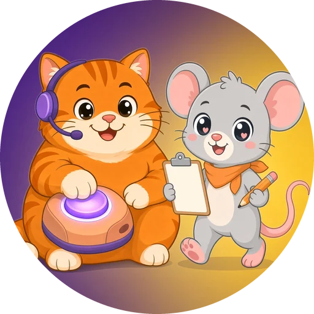
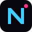

ПЕРВЫЙ В КОЛЛЕКЦИИWINDOWS · OPEN SOURCE

KotoClicker
ДОСТУПЕНАвтокликер с котиком
Котик кликает за тебя: автоклик, прокрутка, перетаскивание и запись макросов в одном приложении для Windows.

NomberSoftwareОТДЕЛ ПРОГРАММНОГО ОБЕСПЕЧЕНИЯ
ПРОГРАММЫ С ХАРАКТЕРОМ
// ИДЕИ, ПРЕВРАЩЁННЫЕ В КОД
Здесь живут мои программы и инструменты: полезные, самостоятельные и с чуточкой настроения.

Автокликер с котиком
Котик кликает за тебя: автоклик, прокрутка, перетаскивание и запись макросов в одном приложении для Windows.
// ИДЕЯ ОТДЕЛА
NomberSoftware — часть экосистемы NOMBER и место для программ, которые хочется открывать снова.
Каждый проект начинается с задачи, которую хочется сделать проще и приятнее.
KotoClicker открыт на GitHub: можно изучать код и следить за развитием.
Практичные инструменты, в которых есть место деталям и настроению.
// НА СВЯЗИ С ЛАБОРАТОРИЕЙ
Новости и обновления прямо из Telegram-канала.
Загружаем публикации…
// ПОДДЕРЖАТЬ РАЗРАБОТКУ
Ваша поддержка помогает новым идеям становиться настоящими проектами.